The non-negotiable sequence: RATE → RHYTHM → AXIS → INTERVALS/QRS → CONDUCTION → ST–T/QT → SYNTHESIS. Run this sequence even when the diagnosis looks obvious — it prevents anchoring and makes hard tracings manageable. First confirm calibration: paper speed 25 mm/sec, voltage 10 mm/mV.
Rate & Rhythm
Question
What to look for
Clinical reasoning
Rate
300 ÷ large boxes between R waves, or 1500 ÷ small boxes
Narrows the differential but does not name the rhythm
Regularity
Regular, regularly irregular, or irregularly irregular?
Irregularly irregular strongly favors AFib; patterned irregularity suggests another mechanism
P waves
Present? Normal morphology? One before every QRS? Multiple morphologies?
Tells you whether the atria are driving the ventricles
QRS
Narrow or wide?
Narrow = activation via the His-Purkinje system; wide raises BBB, ventricular rhythm, pacing, or pre-excitation
P:QRS relationship
Fixed PR? Progressive PR change? Dropped QRS? AV dissociation?
The key to distinguishing sinus rhythms from AV block and junctional/ventricular rhythms
High-yield rhythm discrimination: Afib = no organized P waves + irregularly irregular response. Atrial flutter = organized atrial activity, classic sawtooth. MAT = irregular rhythm, ≥3 distinct P-wave morphologies, atrial rate >100 (COPD/CHF context). SVT/AVNRT/AVRT = regular narrow-complex tachycardia, P waves hidden or retrograde (WPW = accessory pathway). VT = regular wide-complex tachycardia; AV dissociation, capture beats, or fusion beats strongly support it. Junctional rhythm = absent/inverted/retrograde P waves with a narrow QRS.
Axis & Intervals
Axis
Use leads I and aVF first. I+/aVF+ = normal. I+/aVF− = leftward. I−/aVF+ = rightward. Both negative = extreme axis.
PR
Prolonged → AV nodal delay. Short PR + delta wave + widened QRS → WPW.
QRS
≥0.12s = complete bundle-branch block or another cause of delayed ventricular activation.
QT/QTc
Prolonged repolarization creates torsades risk — always connect a long QT to medications, electrolytes, or congenital causes.
Interpretation habit: don't stop at "left axis deviation" or "wide QRS." Ask what diagnosis explains it in this patient.
Conduction: AV Block vs. Bundle-Branch Block
Pattern
ECG clue
Where/why it matters
Action-level meaning
1° AV block
PR >0.20s; every P conducts
Delayed AV conduction
Recognize; significance depends on context
Mobitz I (Wenckebach)
Progressive PR lengthening → dropped QRS
Usually AV nodal
Often transient/benign
Mobitz II
Constant PR on conducted beats + sudden dropped QRS
Usually His-Purkinje; may have wide QRS
More dangerous; may progress to complete block
3° AV block
P waves and QRS complexes march independently
Complete AV dissociation
Unstable bradycardia risk; pacing often required
RBBB
QRS ≥0.12s; RSR′ in V1–V2; wide S in I/V6
Delayed RV activation
A conduction abnormality, not a rhythm
LBBB
QRS ≥0.12s; broad/notched R in I, aVL, V5–V6; negative V1
Delayed LV activation
Secondary ST-T changes can complicate ischemia interpretation
Clinical discriminator: a dropped beat with progressive PR lengthening is Mobitz I. A dropped beat with unchanged PR intervals is Mobitz II. P waves marching independently through QRS complexes is complete heart block.
Ischemia & Injury: Localize Before Naming the Artery
STEMI evolution: hyperacute T waves → J-point/ST elevation → more pronounced convex ST elevation → Q-wave/R-wave changes → T-wave inversion or normalization. ST elevation in ≥2 contiguous leads = acute injury; ST depression/T inversion may support ischemia/NSTEMI in the right context. Inferior territory = II, III, aVF — inferior STEMI + AV block → think RCA (supplies the AV node). Posterior injury may appear as reciprocal anterior ST depression — don't call anterior ST depression "just ischemia" without considering posterior MI.
Clinical reasoning rule: symptoms + territory + conduction finding can be more diagnostic than any single ECG feature. Example: chest pressure + ST elevation II/III/aVF + complete AV block → inferior STEMI with RCA involvement.
Hypertrophy & Chamber Enlargement
RVH: right axis deviation, tall R in V1 (R>S), dominant S in V6, possible RV strain. LVH: Sokolow-Lyon voltage (S in V1 + R in V5/V6 >35mm) plus supportive strain (ST depression/T inversion in left-sided leads). RAE (P pulmonale): pressure/volume overload — pulmonary HTN, chronic lung disease. LAE (P mitrale): mitral stenosis, LV dysfunction, mitral regurgitation, or other chronic left-sided loading.
Metabolic & Drug Patterns: the EKG as a Physiologic Monitor
Context
Reasoning target
Why it matters
Hyperkalemia
Recognize the progressive repolarization/conduction pattern, not a single isolated finding
Can evolve into lethal conduction and ventricular rhythms
Hypokalemia
Repolarization abnormalities and increased arrhythmia susceptibility
Also potentiates digoxin toxicity
Prolonged QT
Identify QT prolongation and connect it to torsades risk
Medication/electrolyte review becomes part of interpretation
Digitalis effect/toxicity
Don't equate every digoxin-associated change with toxicity — integrate level, K⁺, symptoms, rhythm
Toxicity can produce multiple arrhythmias, including junctional rhythms
Hypothermia
Recognize the J/Osborn wave in the appropriate clinical context
The tracing should point you back to the patient's temperature
The 30-Second Oral Interpretation
"Rate is ___. Rhythm is ___. Axis is ___. PR is ___; QRS is ___; QT/QTc is ___. There is/is not evidence of ___ conduction abnormality. ST-T changes are ___ in leads ___. Overall, this ECG is most consistent with ___, which in this patient suggests ___."
Worked example: "Rate is 72 beats/min. Rhythm is normal sinus. Axis is normal. PR is normal; QRS is narrow; QTc is not prolonged. There is no conduction abnormality. There is ST-segment elevation in II, III, and aVF with reciprocal depression in I and aVL. Overall, this ECG is most consistent with an acute inferior STEMI, which in this patient suggests an RCA culprit lesion."
2. Dropped QRS complexes — Wenckebach vs. Mobitz II is separated by whether the PR interval progressively lengthens before the dropped beat (Mobitz I) or stays constant (Mobitz II).
3. Regular wide-complex tachycardia — AV dissociation, capture beats, or fusion beats push you toward VT.
4. Chest pressure + ST elevation II/III/aVF + complete AV block → inferior STEMI, most consistent with RCA involvement.
5. Short PR + delta wave + widened QRS → pre-excitation via an accessory pathway (WPW).
Mastery target: take an unfamiliar tracing through the same sequence every time, recognize the high-yield patterns, and use the vignette to decide what the ECG means clinically. Pattern recognition gets you the diagnosis; clinical reasoning gets you the point.
Part 1 · Case-Based EKGs
Real patient vignettes paired with their EKGs — CIS I, CIS II & Comprehensive CV Cases
Case 1 — The Missed DialysisCIS I
29 y/o female with diabetic ESRD on hemodialysis presents with nausea, lightheadedness, and weakness after missing 3 days of dialysis (skipped because of a head cold).
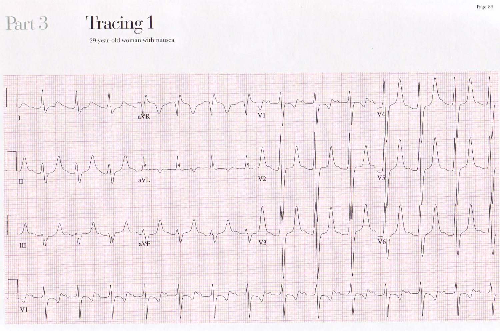
Rate
84 bpm
Rhythm
Sinus rhythm with 1° AV block
Axis
−60°
Key Identifiers
Peaked T waves + prolonged QT interval; PR interval prolonged
Leads to Key In On
Precordial leads for peaked/tented T waves; any lead for the PR interval
High-yield stem/vignette clues: "Missed dialysis" + ESRD + peaked T waves is a classic hyperkalemia setup — the 1° AV block is an early conduction sign of rising K⁺.
Clinical manifestations & management: Hyperkalemia from missed dialysis. Treat emergently: calcium gluconate (membrane stabilization), insulin/glucose and beta-2 agonists (shift K⁺ intracellularly), potassium binders, and urgent dialysis to remove the potassium load.
Case 2 — Chest Pain Radiating to the ArmCIS I
41 y/o male with chest pain radiating to the left arm, dyspnea, and diaphoresis. Pulse 110, BP 90/50, S3 present, bibasilar crackles 50% up.
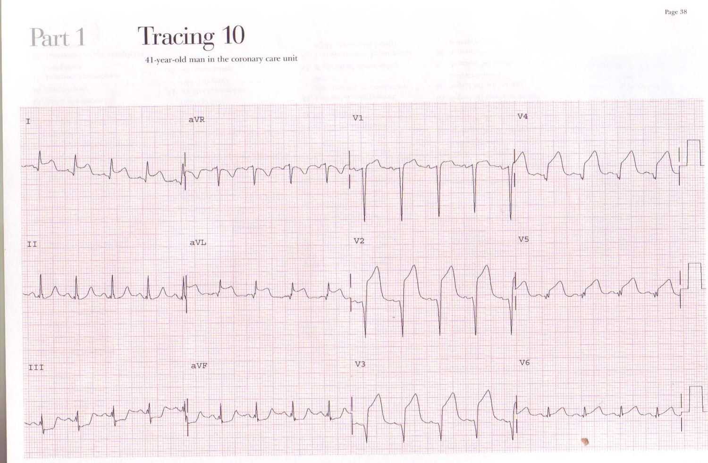
Rate
114 bpm
Rhythm
Sinus tachycardia
Axis
+30°
Key Identifiers
ST-segment elevation in I, aVL, V1–V6 with reciprocal changes in III and aVF
Leads to Key In On
I, aVL, V1–V6 for the injury pattern; III/aVF for reciprocal depression
High-yield stem/vignette clues: S3 + crackles + hypotension in the setting of an anterolateral STEMI = early cardiogenic pump failure.
Clinical manifestations & management: Acute anterolateral MI (LAD territory). Reciprocal changes confirm it's a true injury pattern, not just diffuse ST change. Needs emergent revascularization.
Case 3 — The Racing Heart That ResolvedCIS I
48 y/o female felt dizzy and took her own pulse at ~200; by the time she's evaluated she feels fine with a pulse of 68 and a normal exam.
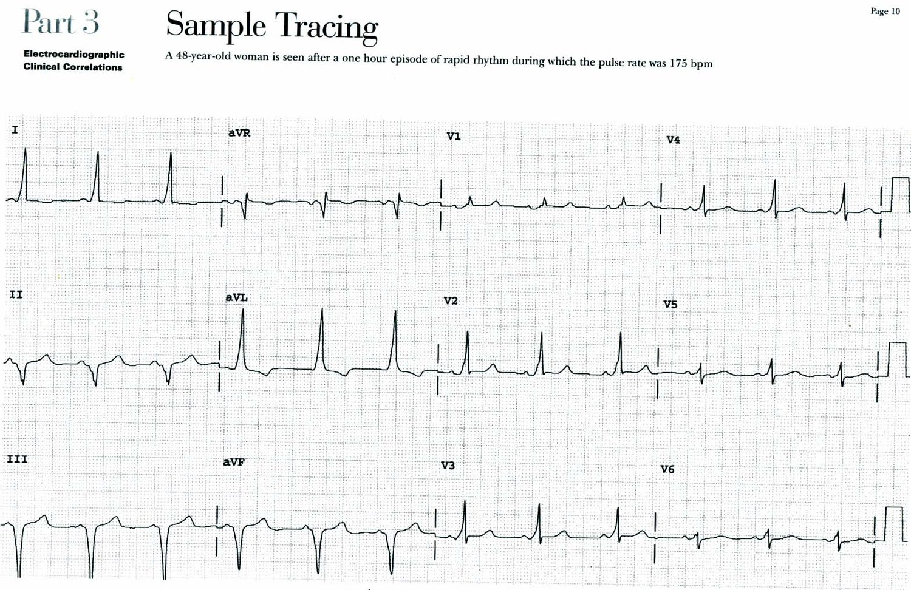
Rate
72 bpm
Rhythm
Normal sinus
Axis
−60°
Key Identifiers
Delta wave with short PR interval; Q waves in II, III, aVF represent WPW conduction, not infarction
Leads to Key In On
Any lead for the slurred delta-wave upstroke; inferior leads for the pseudo-infarct Q waves
High-yield stem/vignette clues: A resting EKG can look completely normal-rate but still carry the diagnosis if you catch the delta wave — "felt her pulse at 200, now resolved" = paroxysmal tachycardia via an accessory pathway.
Clinical manifestations & management: WPW syndrome. The paroxysmal tachycardia she felt was likely AVRT using the Bundle of Kent. Definitive treatment is catheter ablation of the accessory pathway.
Case 4 — Heaving Sensation When Lying DownCIS I
73 y/o male with an intermittent "heaving sensation" in his chest for months, worse lying down. No syncope, chest pain, dyspnea, or diaphoresis.
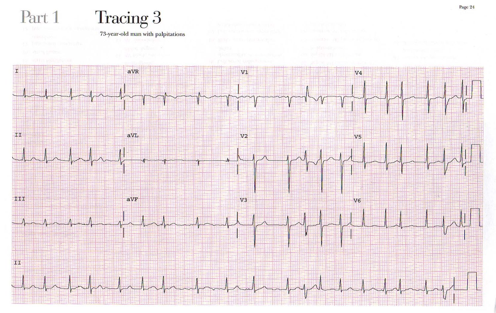
Rate
114 bpm
Rhythm
Atrial fibrillation
Axis
+60°
Key Identifiers
Absent P waves; nonspecific T-wave flattening; no infarction
Leads to Key In On
Lead II or V1 rhythm strip for the irregularly irregular baseline and absent organized P waves
High-yield stem/vignette clues: Chronic, intermittent "heaving/fluttering" sensation with no other red flags is a classic benign-sounding presentation of AFib.
Clinical manifestations & management: Atrial fibrillation. Assess rate control and thromboembolic risk (CHA₂DS₂-VASc) even in an asymptomatic-appearing patient.
Case 5 — Uncontrolled Hypertension for a DecadeCIS I
64 y/o male with long-standing HTN (BP consistently 170/98) who hasn't taken his medication regularly because he can't afford it.
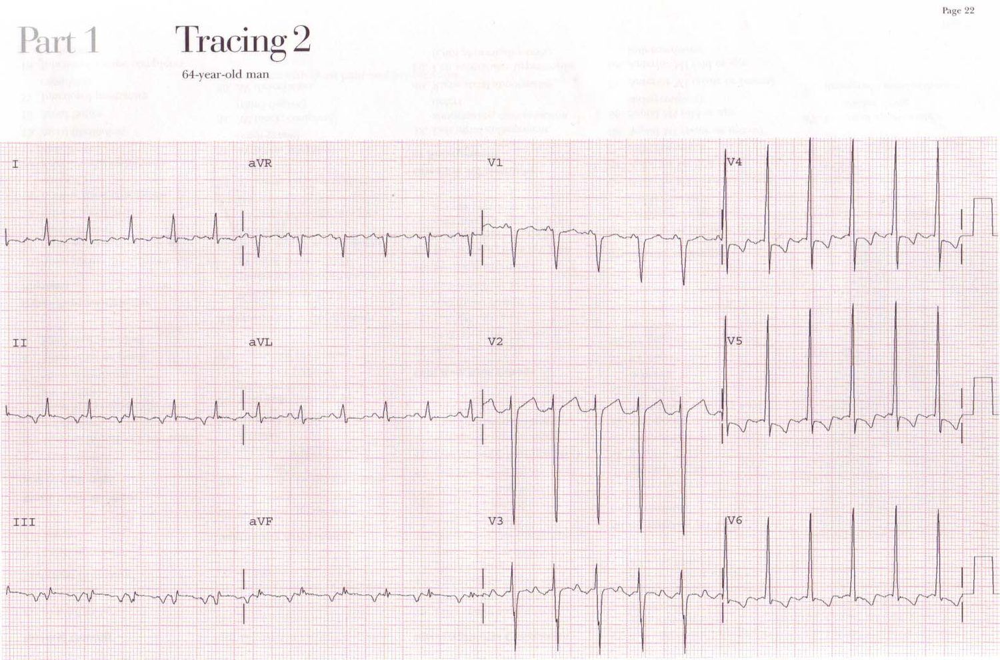
Rate
150 bpm
Rhythm
Sinus tachycardia
Axis
+30°
Key Identifiers
Left ventricular hypertrophy with strain pattern (ST depression/T inversion in left-sided leads); no infarction
Leads to Key In On
V5–V6, I, aVL for the strain pattern; Sokolow-Lyon voltage (S in V1 + R in V5/V6)
High-yield stem/vignette clues: A decade of uncontrolled, undertreated hypertension is the setup for chronic pressure-overload LVH with a strain pattern.
Clinical manifestations & management: LVH with strain from chronic uncontrolled hypertension. Reinforces the importance of affordable, adherent antihypertensive therapy to prevent this remodeling.
Case 6 — Fatigue After a Medication SwitchCIS I
63 y/o male with 3 weeks of generalized fatigue and weakness after his BP medication was recently changed from chlorthalidone to atenolol.
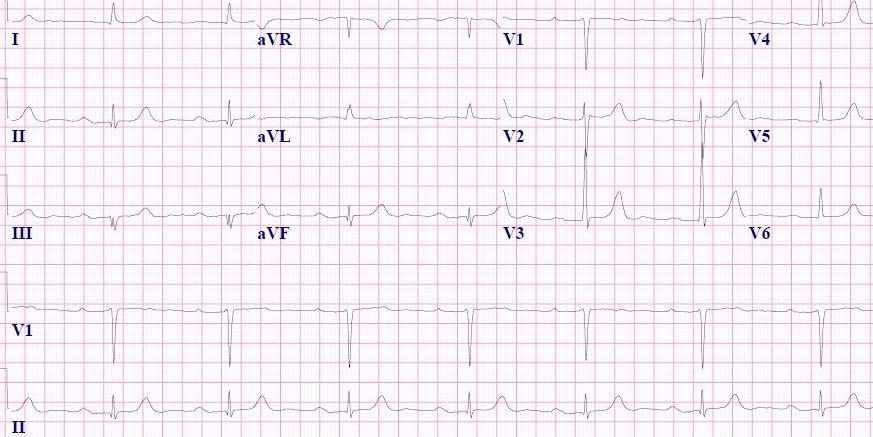
Rate
50 bpm
Rhythm
Sinus bradycardia
Axis
0°
Key Identifiers
1° AV block (prolonged PR interval); no infarction
Leads to Key In On
Any lead for the PR interval measurement (>0.20 sec)
High-yield stem/vignette clues: Fatigue + a recent switch to a beta-blocker (atenolol) explains both the sinus bradycardia and the AV nodal delay — beta-blockade slows both the SA and AV nodes.
Clinical manifestations & management: Beta-blocker effect on the sinus and AV nodes. Isolated 1° AV block does not require treatment by itself, but the symptomatic bradycardia here warrants reassessing the dose/necessity of the beta-blocker.
Case 7 — The Old "Heart Attack"CIS I
65 y/o male, new patient, reports a "heart attack" five years ago but has no records. You obtain a baseline EKG.
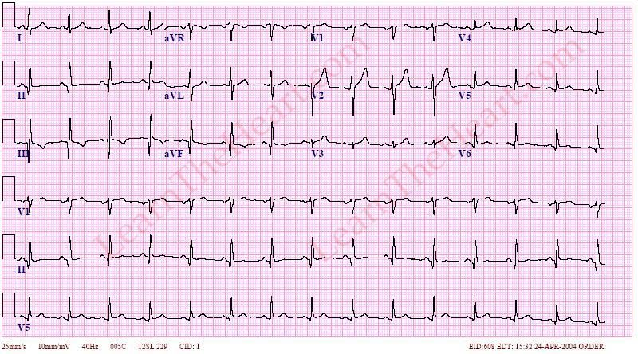
Rate
90 bpm
Rhythm
Normal sinus
Axis
+60°
Key Identifiers
Q waves in II, III, aVF consistent with an old inferior wall MI
Leads to Key In On
II, III, aVF for pathologic Q waves (no acute ST changes)
High-yield stem/vignette clues: "History of heart attack, no records" + Q waves without acute ST changes = confirm and risk-stratify, don't dismiss and don't treat as acute.
Clinical manifestations & management: Old inferior MI. The correct next step is to risk-stratify this patient's coronary artery disease for stability (not admit for acute treatment, not dismiss the history, not assume he needs a pacemaker or antiarrhythmic).
Case 8 — Pentamidine and a Prolonged QTCIS I
48 y/o female admitted with hypoxia, diagnosed with PJP pneumonia, given two doses of pentamidine; a routine post-dose EKG is obtained.
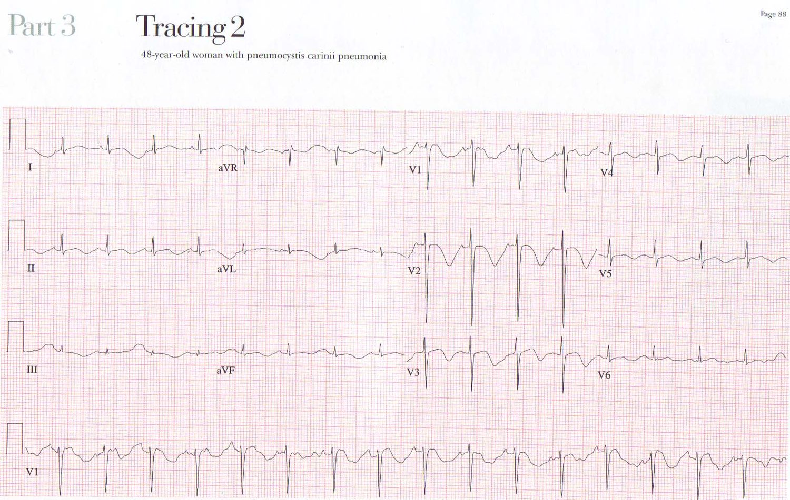
Rate
100 bpm
Rhythm
Sinus tachycardia
Axis
+30°
Key Identifiers
QT prolongation; no infarction
Leads to Key In On
Any lead for QT/QTc measurement
High-yield stem/vignette clues: Pentamidine is a classic drug cause of acquired QT prolongation — the major downstream risk being Torsades de Pointes, not the other listed arrhythmias (3° block, Wenckebach, WPW, AFib).
Clinical manifestations & management: Drug-induced (pentamidine) QT prolongation. Monitor closely and correct any coexisting electrolyte abnormalities (K⁺, Mg²⁺) to reduce Torsades risk.
Case 9 — Gardening in the HeatCIS I
54 y/o woman with chest pain, nausea, vomiting, diaphoresis, and hypotension after pulling weeds in the sun 30 minutes earlier. History of poorly-controlled diabetes and hyperlipidemia.
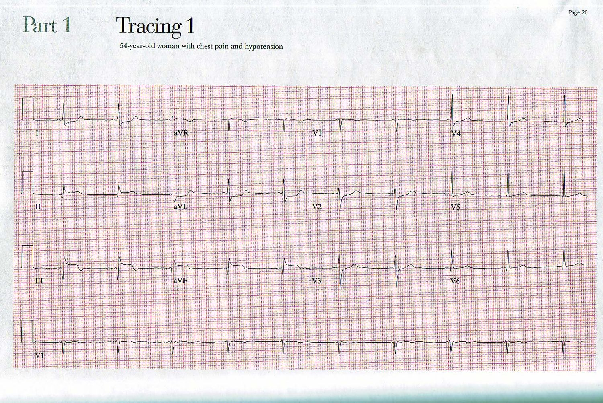
Initial EKG
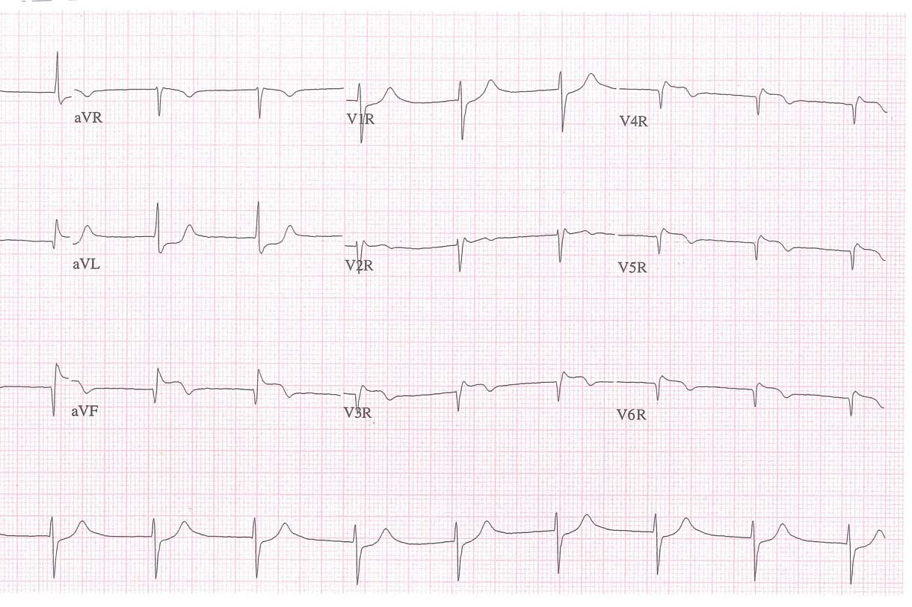
RV infarct EKG
Rate/Rhythm
See inferior MI + right-sided/RV infarct pattern
Key Identifiers
Inferior MI pattern with right ventricular infarct involvement
Leads to Key In On
II, III, aVF for the inferior injury; right-sided leads (V4R) to confirm RV infarct
High-yield stem/vignette clues: Inferior MI + hypotension (80/40) is the classic "nitrate-sensitive, preload-dependent" RV infarct combination.
Clinical manifestations & management: For the hypotension of an RV infarct: give IV fluid resuscitation, not nitrates/morphine/diuretics (these drop preload further and can cause severe hypotension in a preload-dependent right ventricle). For the associated arrhythmia risk in acute MI, beta-blockers are part of standard management once hemodynamically appropriate.
Case 10 — Chest Pressure with a DeviceCIS I
78 y/o male with retrosternal chest pressure, diaphoresis, and dyspnea.
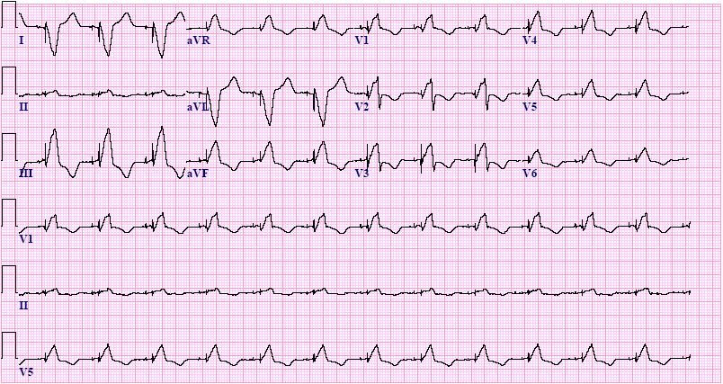
Rate
75 bpm
Rhythm
AV sequential (dual-chamber) paced rhythm
Axis
+150°
Key Identifiers
Pacer spikes before both P wave and QRS; underlying ST/infarction status cannot be assessed
Leads to Key In On
Any lead for the paced spikes preceding both the P wave and QRS complex
High-yield stem/vignette clues: A paced rhythm cannot be used to rule out ischemia by ST-segment criteria — the correct move for concerning chest pain is to pursue cardiac enzymes/troponin, not to reassure or blame musculoskeletal pain.
Clinical manifestations & management: Ischemia cannot be excluded from this EKG because pacing obscures ST-segment interpretation. Admit for urgent evaluation of ischemic heart disease via cardiac biomarker analysis.
Case 11 — Chest Pressure with a Paradoxical Split S2CIS I
72 y/o male with 60 minutes of retrosternal chest pressure and diaphoresis. BP 120/68, pulse 100, and a paradoxically split S2 on exam.
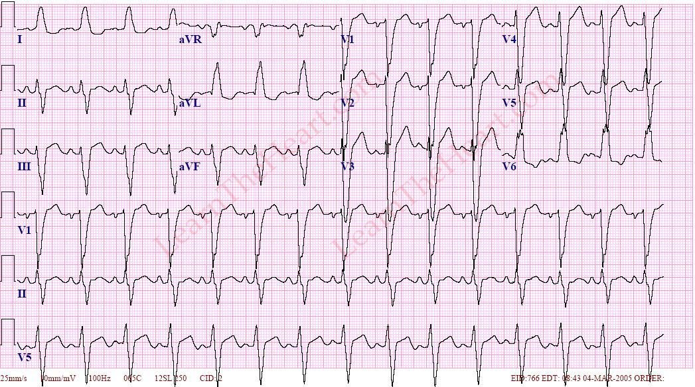
Initial EKG
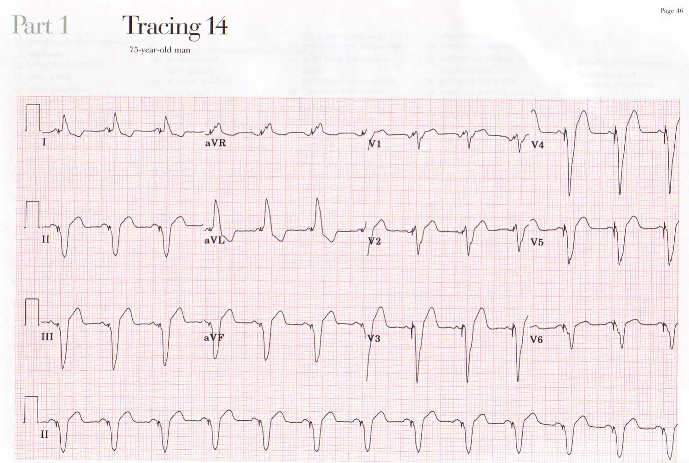
Follow-up EKG
Rate
100 bpm
Rhythm
Sinus tachycardia
Axis
−60°
Key Identifiers
LBBB (infarction cannot be determined in its presence); biphasic P wave in V1 with a deep negative deflection = left atrial enlargement
Leads to Key In On
V1 for the biphasic P wave (LAE) and QS/rS morphology (LBBB); V5–V6, I, aVL for the broad/notched R wave of LBBB
High-yield stem/vignette clues: A paradoxically split S2 (P2 before A2 during expiration) points to delayed aortic valve closure — classic causes are LBBB, aortic stenosis, HOCM, MI, or an RV pacemaker.
Clinical manifestations & management: New LBBB in the setting of acute chest pain should be treated as a possible MI equivalent; because LBBB obscures standard ST-criteria, use serial troponins and any available prior EKG for comparison to diagnose infarction.
Part 1B · CIS II Cases
Dr. Kinder · 5 vignettes + 16 rapid-fire tracings
Case 1 — Palpitations After a Cross-Country DriveCIS II
72 y/o male with 15-year history of well-controlled COPD, sudden palpitations and dyspnea the day after a cross-country drive (up to 14 hrs/day). EKG one year ago was normal.
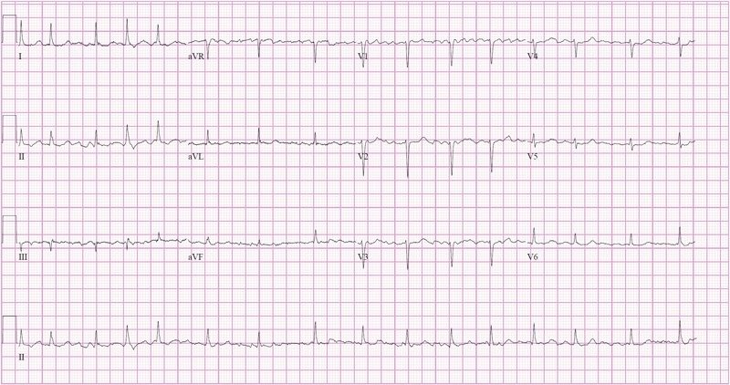
Presenting EKG
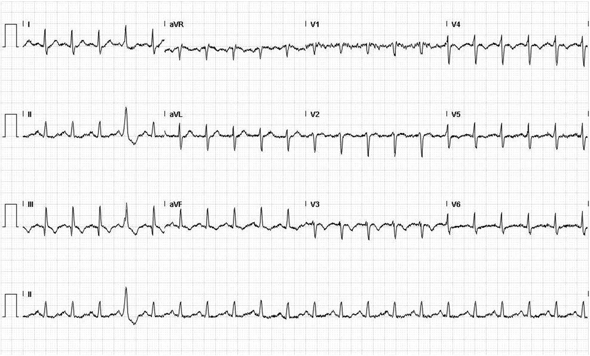
S1Q3T3 reference pattern
Rate
80 bpm
Rhythm
Atrial fibrillation
Axis
+30°
Key Identifiers
Absent P waves, irregularly irregular R-R; no infarction, no hypertrophy
Leads to Key In On
Lead I for a prominent S wave, lead III for a Q wave + T-wave inversion (S1Q3T3) if PE is suspected
High-yield stem/vignette clues: Long car ride (prolonged immobility) + new-onset AFib-like presentation is a classic acute pulmonary embolism setup, not a COPD flare, MI, renal failure, or pericarditis.
Clinical manifestations & management: The S1Q3T3 pattern (prominent S in I, Q in III, inverted T in III) is a classic-but-insensitive sign of acute PE and right heart strain — know it as a pattern-recognition pearl, not a rule-out test.
Case 2 — 48 Hours of Chest PainCIS II
46 y/o male, 2 pack/day smoker x 25 years, morbidly obese (350 lb) and diabetic, with 48 hours of chest pain. BP 96/62, pulse 80, crackles throughout.
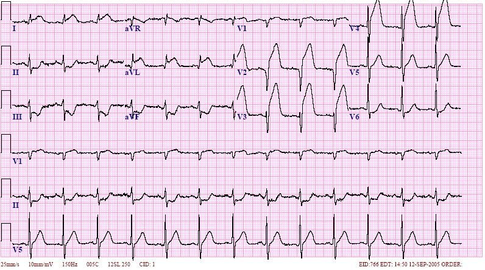
Rate
80 bpm
Rhythm
Normal sinus
Axis
−30°
Key Identifiers
ST changes in I, aVL, V1–4 (anterolateral MI) with reciprocal changes in II, III, aVF
Leads to Key In On
I, aVL, V1–V4 for the injury pattern; II/III/aVF for reciprocal change
High-yield stem/vignette clues: A 48-hour delay in presentation plus crackles/borderline hypotension signals a large anterolateral MI already producing pump failure.
Clinical manifestations & management: Anterolateral MI (LAD territory) with evidence of early heart failure (crackles) — high-risk presentation given the delayed presentation.
Case 3 — Left Alone for the WeekendCIS II
83 y/o female with mild dementia, left home alone for the weekend, presents with nausea and lightheadedness. Takes lisinopril, furosemide, and a potassium supplement for CHF; can't recall her dosing.
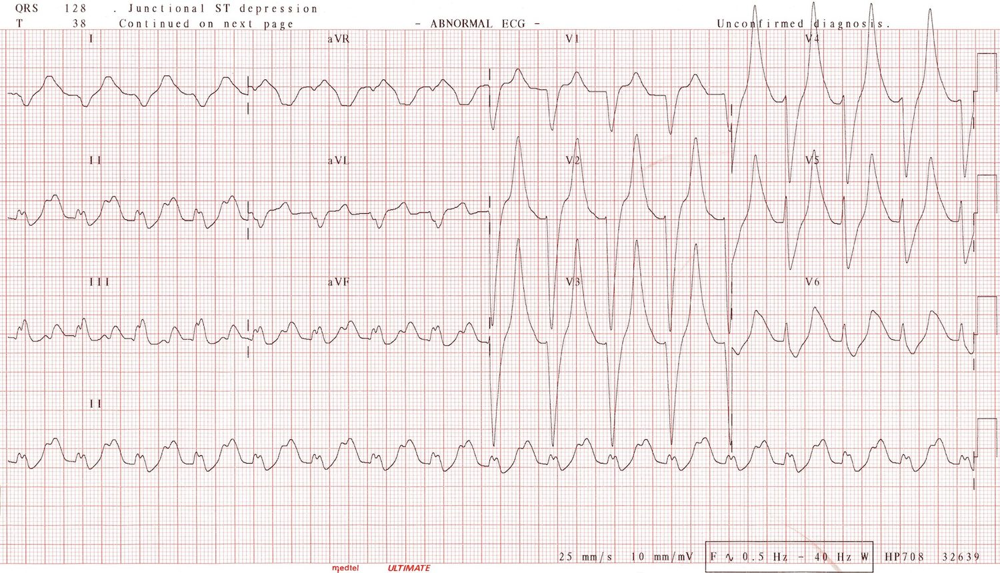
Rate
100 bpm
Rhythm
Junctional tachycardia
Axis
+120°
Key Identifiers
Absent P waves, extremely peaked T waves, prolonged QT — hyperkalemia
Leads to Key In On
Precordial leads for tented/peaked T waves; absence of visible P waves
High-yield stem/vignette clues: Dementia + unsupervised access to an ACE inhibitor, a potassium supplement, and a diuretic is a recipe for dangerous hyperkalemia.
Clinical manifestations & management: Immediately stop any potassium source first, then proceed with calcium (membrane stabilization), insulin/glucose and beta-2 agonists (intracellular shift), potassium binders, and diuretics as appropriate.
Case 4 — Found Down, ResuscitatedCIS II
56 y/o male brought in by EMS after being found unresponsive in the field and successfully resuscitated by paramedics. He remains unresponsive though vitally stable now. This is his field EKG.
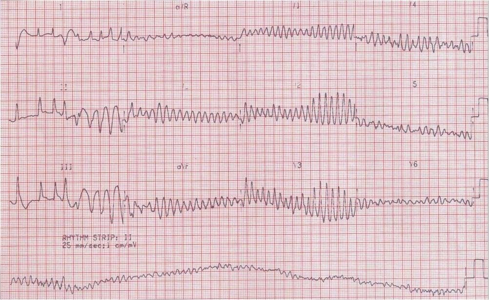
Rate/Rhythm
Ventricular fibrillation — chaotic, no organized QRS complexes
Key Identifiers
No discernible P waves, QRS complexes, or T waves; fine/coarse chaotic baseline
High-yield stem/vignette clues: "Found down" + successful resuscitation + a chaotic EKG with no organized complexes = VFib, not VT, Torsades, AFib, or SVT (all of which retain some organized complex).
Clinical manifestations & management: VFib produces no cardiac output and requires immediate CPR and defibrillation; this patient's arrest was almost certainly this rhythm in the field.
Case 5 — Machine vs. Physician InterpretationCIS II
44 y/o male with dizziness and nausea. The machine reads the EKG as "LVH and old inferior wall MI" and you're asked to confirm or override.
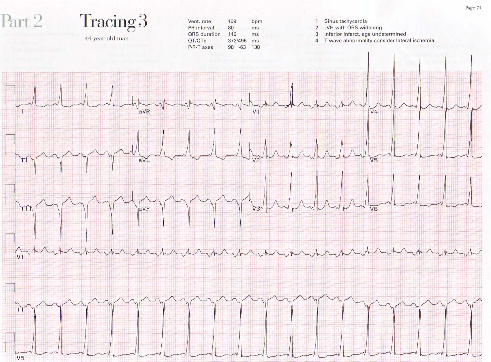
Rate
110 bpm
Rhythm
Sinus tachycardia
Axis
−60°
Key Identifiers
Delta wave with shortened PR interval = WPW; the machine's "LVH" and "inferior MI" reads are pseudo-findings from pre-excitation
Leads to Key In On
Any lead for the slurred delta-wave upstroke and short PR
High-yield stem/vignette clues: This is the classic teaching point that automated EKG machine readings can be fooled by WPW's pseudo-infarction and voltage changes — always verify the computer read yourself.
Clinical manifestations & management: WPW produces a pseudo-infarct pattern in up to 70% of patients (negative delta waves mimicking Q waves, or prominent R waves in V1–3 mimicking posterior MI) and can inflate voltage criteria, mimicking LVH.
EKGs One–Sixteen — Rapid FireCIS II
Presented in the original deck without full vignettes — interpret each cold, then check against the read below.
EKG One — LBBB
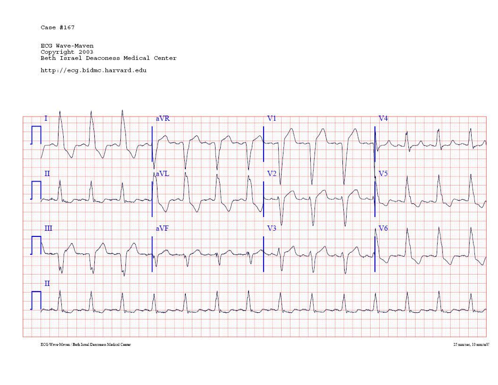
Rate
80 bpm
Rhythm
Normal sinus
Axis
LAD
Key Identifiers
Widened QRS in precordial leads; qS in V1, rs in V2, typical LBBB morphology V5–V6
Leads to Key In On
V1–V2 and V5–V6
Infarction cannot be assessed in the presence of LBBB.
EKG Two — Wenckebach
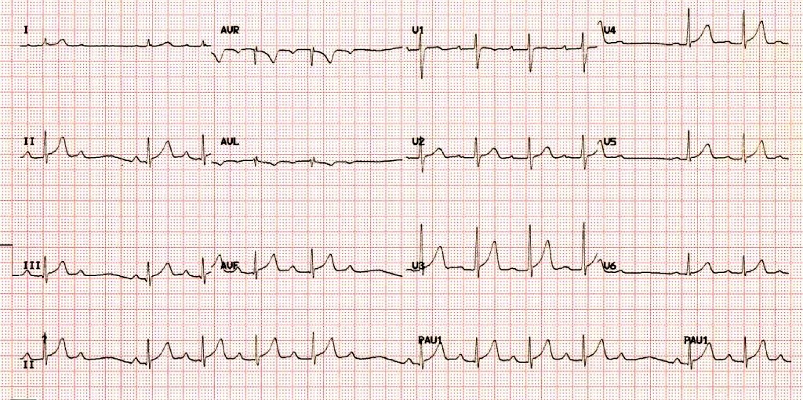
Rate
66 bpm
Rhythm
Mobitz I (Wenckebach)
Axis
+60°
Key Identifiers
PR interval progressively lengthens until a beat is dropped; R-R shortens as PR lengthens
Leads to Key In On
Any long rhythm strip to trend successive PR intervals
EKG Three — Ventricular Bigeminy
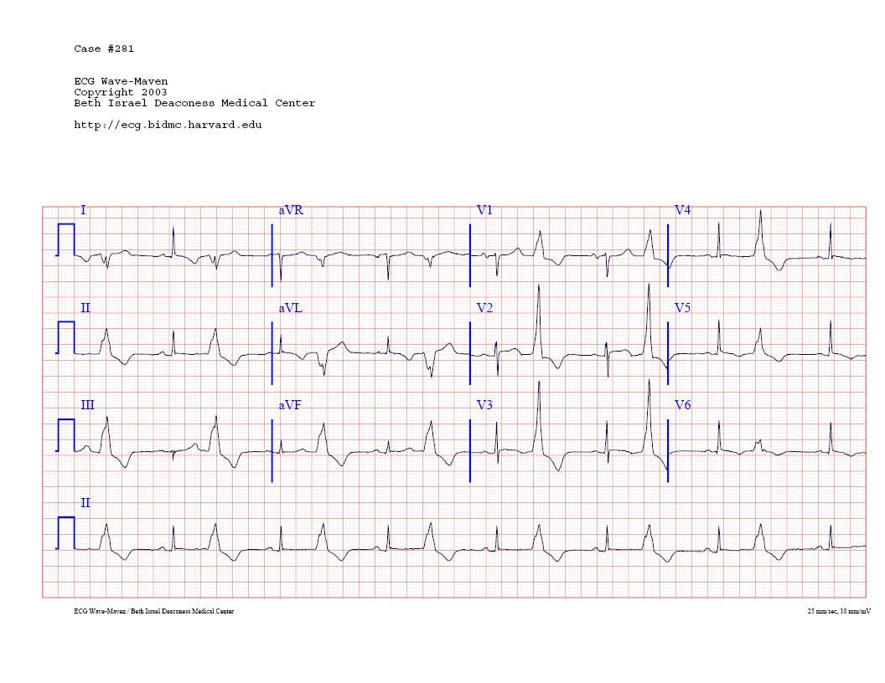
Rate
75 bpm
Rhythm
Normal sinus with ventricular bigeminy
Axis
+30°
Key Identifiers
Every other beat is a wide, bizarre PVC
Leads to Key In On
Rhythm strip pattern: normal-PVC-normal-PVC
EKG Four — RBBB with LAFB
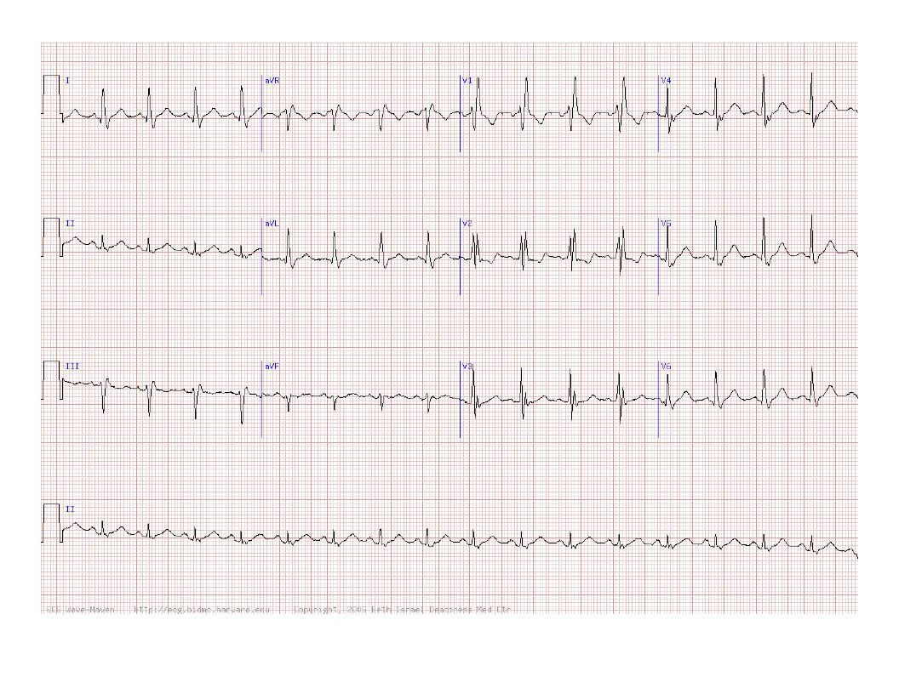
Rate
80 bpm
Rhythm
Normal sinus
Axis
−60°
Key Identifiers
Widened QRS with RSR′ in V1–3 (RBBB); LAD with qR in I/aVL and rS in II/III/aVF (LAFB)
Leads to Key In On
V1–V3 for RBBB; I/aVL vs. II/III/aVF for the fascicular block axis
A bifascicular block (RBBB + LAFB) — watch for progression toward complete heart block.
EKG Five — Atrial Fibrillation
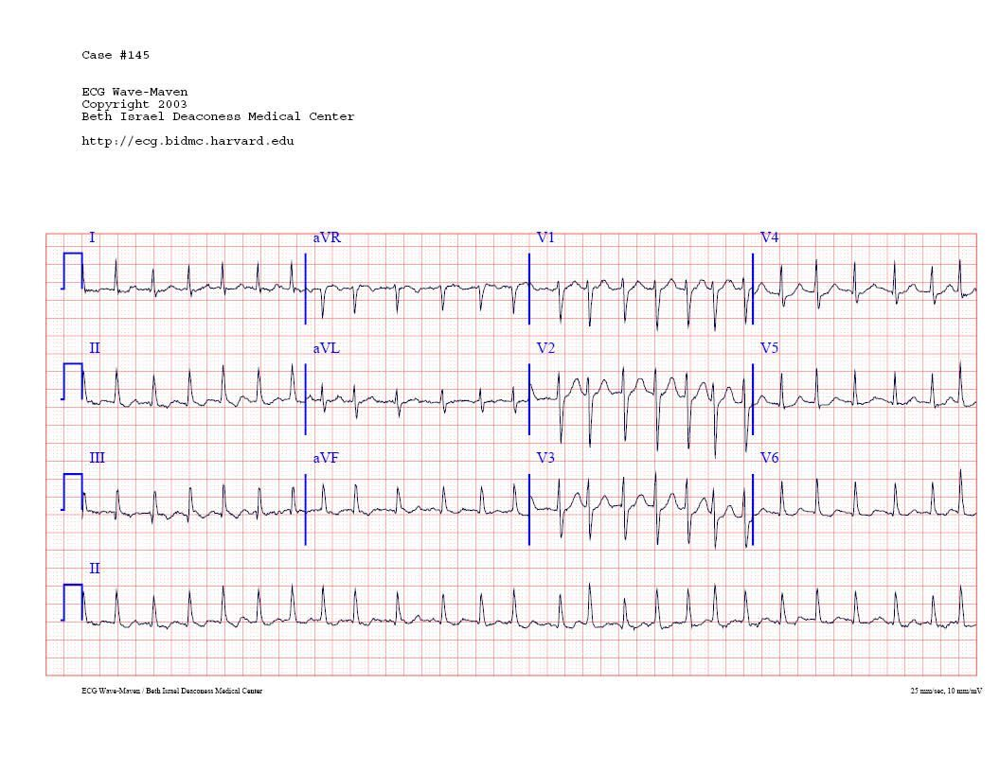
Rate
150 bpm
Rhythm
Atrial fibrillation
Axis
+60°
Key Identifiers
Absent P waves, narrow QRS, irregularly irregular rate
Leads to Key In On
Any rhythm strip for the irregularly irregular baseline
AFib with rapid ventricular response.
EKG Six — Junctional Tachycardia
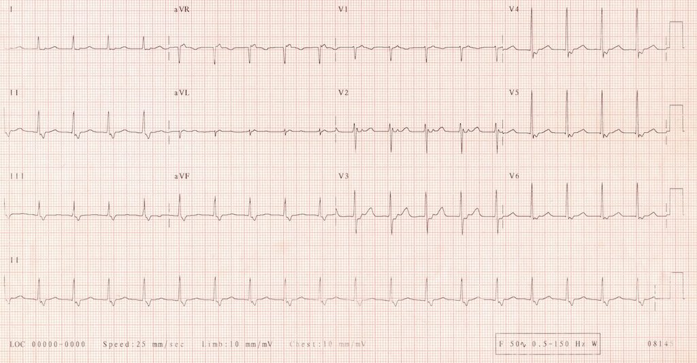
Rate
120 bpm
Rhythm
Junctional tachycardia
Axis
+60°
Key Identifiers
Inverted P waves (retrograde conduction) following the QRS; narrow QRS
Leads to Key In On
Lead II or III for retrograde/inverted P waves after each QRS
EKG Seven — Left Atrial Enlargement
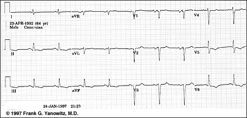
Rate
50 bpm
Rhythm
Sinus bradycardia
Axis
+90°
Key Identifiers
Biphasic P waves in V1–2 with a deep negative terminal deflection (LAE); nonspecific T-wave changes in II, III, aVF, V5–6
Leads to Key In On
V1 for the biphasic/P-mitrale morphology
EKG Eight — 3° AV Block + Massive Anterior MI
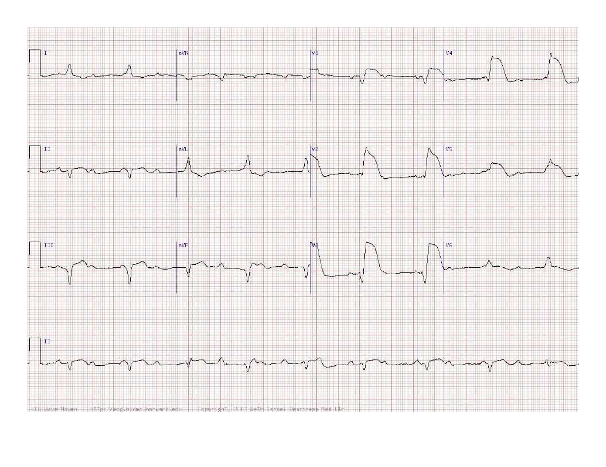
Rate
96 bpm
Rhythm
3° AV block (complete AV dissociation)
Axis
−60°
Key Identifiers
P waves and QRS complexes independent of one another; hyperacute ST elevation V1–5 (anterior MI)
Leads to Key In On
V1–V5 for hyperacute STE; compare P-wave and QRS rates for dissociation
Complete heart block complicating a massive anterior MI is a medical emergency — pacemaker plus emergent revascularization.
EKG Nine — LVH with Strain
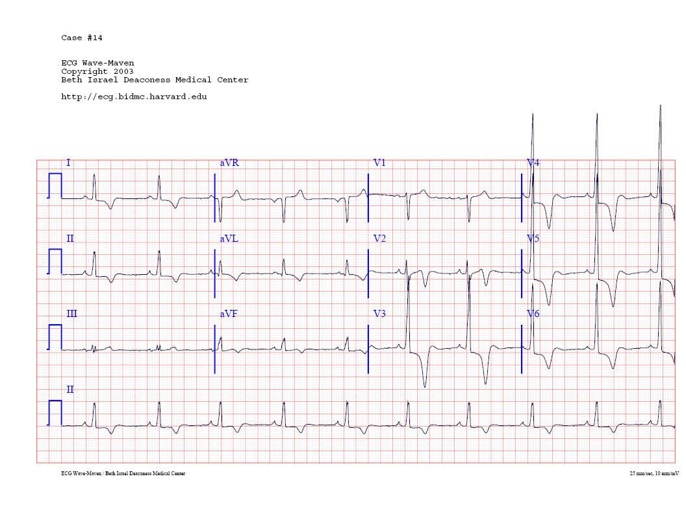
Rate
60 bpm
Rhythm
Normal sinus
Axis
30°
Key Identifiers
S in V1 + R in V5 >35mm; inverted/asymmetric T waves (strain pattern); no infarction
Leads to Key In On
V1 and V5 for voltage criteria; left-sided leads for strain
EKG Ten — SVT
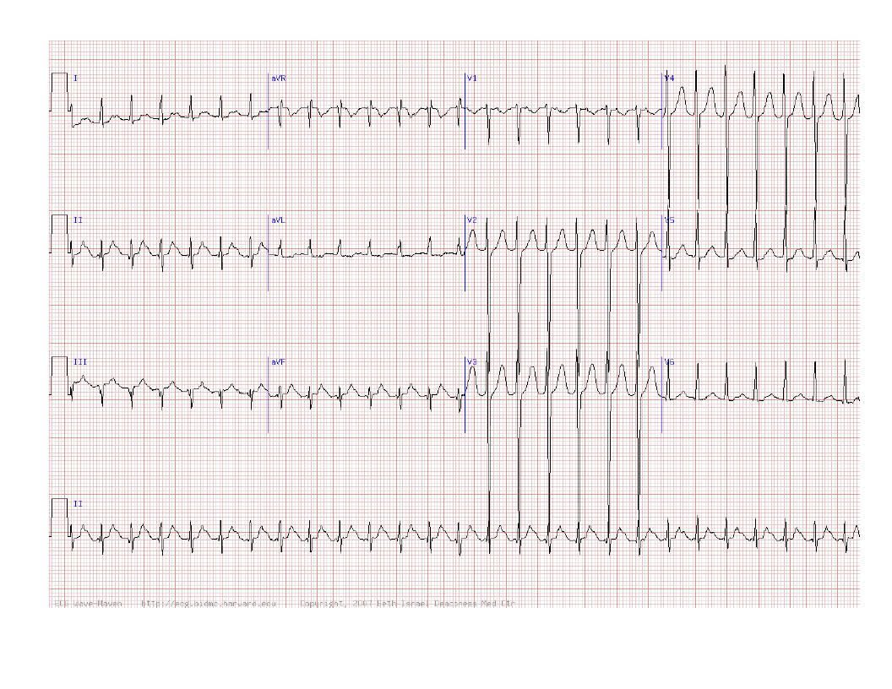
Rate
160 bpm
Rhythm
SVT
Axis
−30°
Key Identifiers
Narrow-complex tachycardia so fast that P waves cannot be confirmed present or absent
Leads to Key In On
Any lead — note the narrow QRS despite the rapid rate
EKG Eleven — Acute Pericarditis
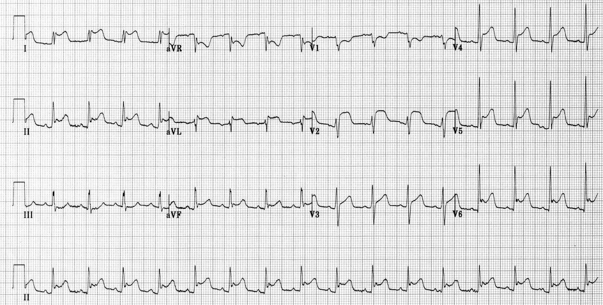
Rate
100 bpm
Rhythm
Sinus tachycardia
Axis
+60°
Key Identifiers
Diffuse ST-segment elevation with the T wave off the baseline, PR-segment depression
Leads to Key In On
Widespread leads for diffuse (not territorial) STE; PR depression
EKG Twelve — RBBB with LPFB
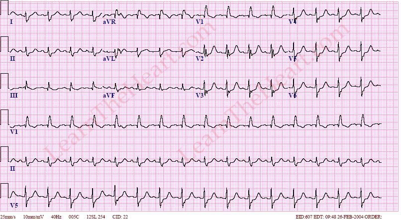
Rate
100 bpm
Rhythm
Sinus tachycardia
Axis
+110°
Key Identifiers
Right axis deviation + S1Q3 pattern, plus RSR′ in V2 = RBBB with LPFB
Leads to Key In On
V2 for RSR′; I and III for the S1Q3 axis shift
Another bifascicular block pattern; unopposed right-sided forces shift the axis rightward.
EKG Thirteen — AV Sequential Paced
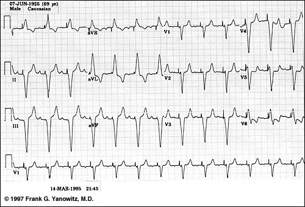
Rate
80 bpm
Rhythm
Normal sinus & ventricular paced
Axis
LAD
Key Identifiers
Paced rhythm; lead placement determines the resulting vectors, so little else can be interpreted
Leads to Key In On
Look for the atrial sense generating a pacer spike before ventricular conduction
Segments cannot be reliably interpreted for ischemia in a paced rhythm.
EKG Fourteen — PACs
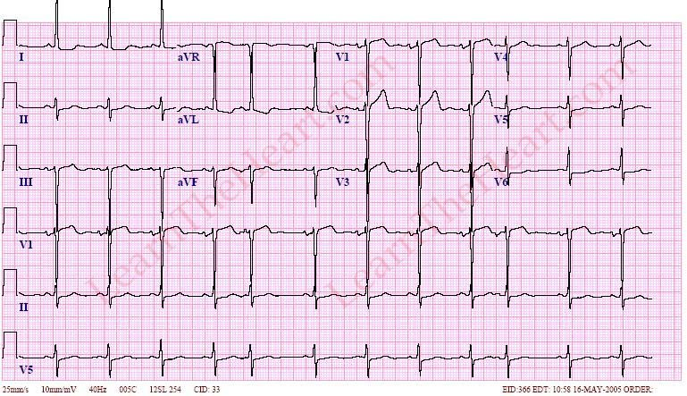
Rate
75 bpm
Rhythm
Normal sinus with premature atrial complexes
Axis
−30°
Key Identifiers
Regular P waves interrupted by early P waves of slightly different morphology
Leads to Key In On
Any lead — compare P-wave morphology of the early beat to the sinus P wave
EKG Fifteen — Prolonged QT (Hypocalcemia)
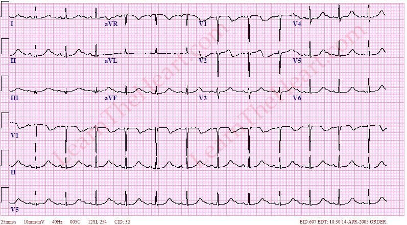
Rate
75 bpm
Rhythm
Normal sinus
Axis
+30°
Key Identifiers
QT segment prolonged (~60msec by the source read); possible U waves
Leads to Key In On
Any lead for QT measurement
Hypocalcemia prolongs the QT interval (specifically the ST segment) — distinct from hypercalcemia, which shortens it.
EKG Sixteen — Ventricular Tachycardia
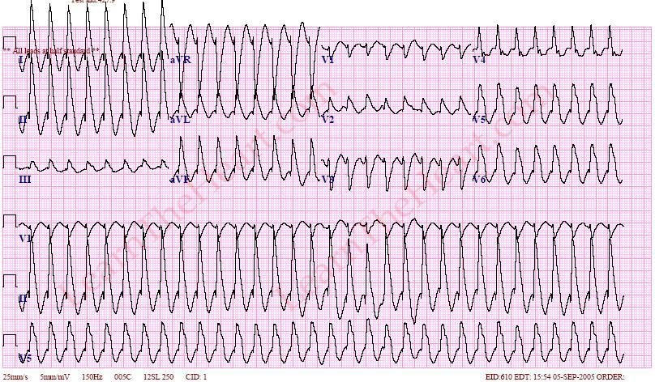
Rate/Rhythm
Ventricular tachycardia
Key Identifiers
Wide-complex, regular tachycardia
Part 1C · Comprehensive CV Cases
Dr. Kinder · 16 EKGs across 13 numbered cases + 3 unnumbered tracings
33 y/o male with non-radiating substernal chest pain, improved leaning forward and worse lying supine, 2 weeks after a flu-like illness. Pericardial friction rub along the LSB, some JVD elevation. VS: BP 114/70, P 100, afebrile, SpO2 97%.
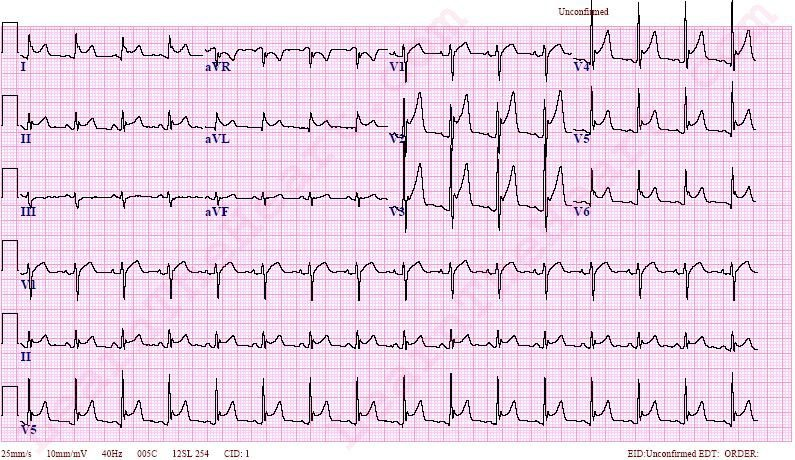
Rate
~100 bpm
Rhythm
Sinus
Key Identifiers
Diffuse ST-segment elevation throughout the EKG; aVR is inverted (PR depression pattern)
Leads to Key In On
Widespread leads for diffuse (non-territorial) STE; aVR for reciprocal PR elevation/ST depression
Clinical manifestations & management: Treat with NSAIDs (not tPA, IV fluids, beta-blockers, or PCI/stenting). Order an echocardiogram to evaluate for pericardial effusion/tamponade, which is the feared complication. Confirmatory exam finding: the pericardial friction rub.
Case 2 — Sports Physical with a MurmurComprehensive CV Cases
17 y/o male, asymptomatic with exercise, sports physical. Grade III/VI systolic murmur at the aortic listening post radiating up the neck that softens with squatting.
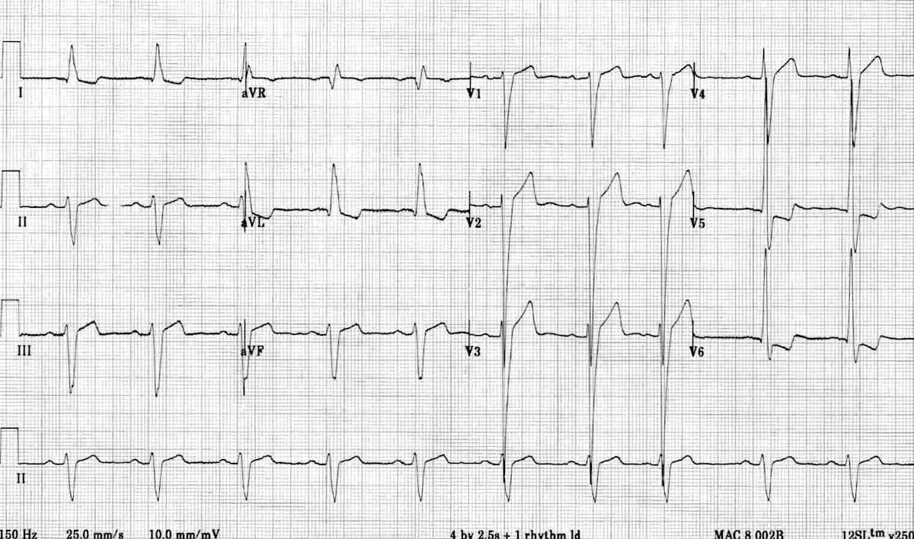
Key Identifiers
LVH criteria: QRS >35mm, left ventricular strain, left axis deviation
Leads to Key In On
Precordial leads for voltage criteria and strain pattern
High-yield stem/vignette clues: A murmur that gets SOFTER with squatting (increased venous return/preload, increased afterload) is dynamic outflow obstruction — hypertrophic (obstructive) cardiomyopathy, not fixed aortic stenosis (which would get louder or unchanged with reduced preload maneuvers... actually AS softens with squatting too, but the LVH-pattern EKG plus the murmur physiology here points to HOCM).
Clinical manifestations & management: Asymptomatic HOCM: no treatment restriction mandated outright, but needs echocardiogram and cardiology referral before clearing for competitive sports; risk-stratify for sudden cardiac death. Newer option: cardiac myosin inhibitors (e.g., mavacamten) for symptomatic obstructive HCM.
Case 3 — Appendicitis on the Wrong SideComprehensive CV Cases
23 y/o female with left lower quadrant rebound tenderness and a toxic appearance; pain began peri-umbilical and localized over "McBurney's point on the left." Surgeon is concerned about her EKG before taking her to the OR.
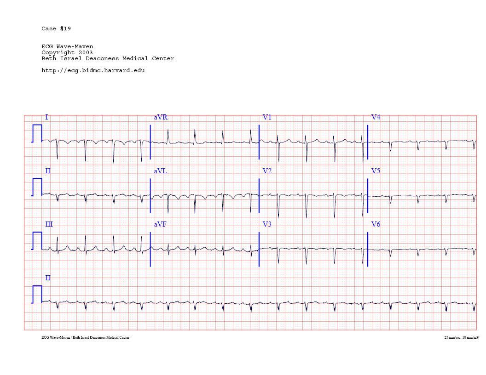
Key Identifiers
EKG complexes inverted relative to normal: lead I QRS negative, aVR QRS positive, precordial leads fail to show normal R-wave progression, P waves inverted
Leads to Key In On
Lead I and aVR for the mirror-image inversion; V1–V6 for absent R-wave progression
High-yield stem/vignette clues: Left-sided "McBurney's point" appendicitis + a globally inverted-looking EKG = situs inversus (mirror-image organ arrangement), not cardiac pathology.
Clinical manifestations & management: This is a normal variant for this patient (dextrocardia with situs inversus) — clear her for surgery; the surgical diagnosis is appendicitis on the anatomically mirrored (left) side.
Case 4 — Chest Pain After CocaineComprehensive CV Cases
20 y/o college student with retrosternal chest pain starting 20 minutes after snorting cocaine at a party. T 99.1, BP 184/120, P 122, R 21.
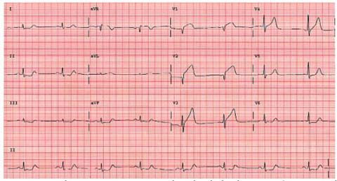
Key Identifiers
ST-segment elevation consistent with myocardial infarction
Leads to Key In On
Territorial leads matching the vessel involved by coronary vasospasm
High-yield stem/vignette clues: Young patient, severe hypertension/tachycardia, and STEMI-pattern changes shortly after cocaine use = cocaine-induced coronary vasospasm, not atherosclerotic MI.
Clinical manifestations & management: Send to the cath lab; avoid pure beta-blockade (unopposed alpha stimulation can worsen vasospasm/hypertension). Treat with benzodiazepines, nitrates, and calcium channel blockers as first-line for cocaine-associated chest pain, alongside standard ACS workup.
Case 5 — Santa in the ColdComprehensive CV Cases
55 y/o male, dressed as Santa, found unresponsive after volunteering outside for 5 hours in December. BP 80/40, P 54, R 10, temp 86.2°F.
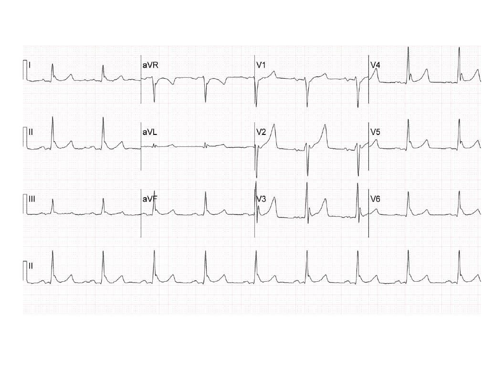
Rate
54 bpm (bradycardic)
Rhythm
Sinus bradycardia
Key Identifiers
Osborn (J) waves — an extra deflection at the end of the QRS complex; QT prolongation
Leads to Key In On
Any lead, but Osborn waves are most prominent at the QRS-ST junction
High-yield stem/vignette clues: Prolonged cold exposure + hypotension/bradycardia + Osborn waves = hypothermia (core temp <95°F; ~80% of patients show Osborn waves as core temp approaches 86°F).
Clinical manifestations & management: Treatment is core re-warming — not ACS therapy (morphine/O2/nitrates/aspirin), not an ICD, not an antiarrhythmic, and not tPA. Osborn waves resolve with rewarming.
Case 6 — Irritability, Kidney Stone, and a Neck LumpComprehensive CV Cases
54 y/o female with irritability, poor concentration, a recent kidney stone, a solid neck mass, and a 30 pack-year smoking history.
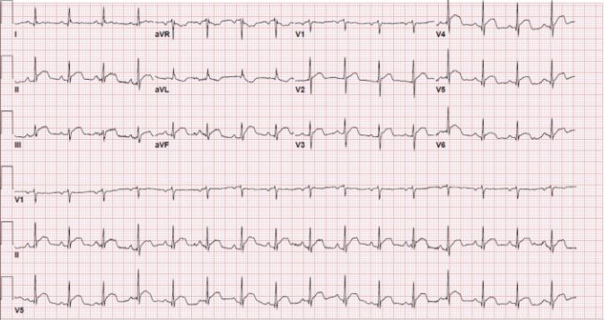
Key Identifiers
Shortened QT interval
Leads to Key In On
Any lead for QT measurement (shortened, not prolonged)
High-yield stem/vignette clues: Neck mass + kidney stone + neuropsychiatric symptoms + a short QT = hypercalcemia from a PTH-secreting parathyroid tumor.
Clinical manifestations & management: High ionized calcium shortens the ST segment (and thus the QT interval) — the opposite EKG direction from hypocalcemia. The kidney stone and neck mass are downstream effects of the hypercalcemia/hyperparathyroidism.
Case 7 — Epigastric Pain in a WomanComprehensive CV Cases
58 y/o female with acute mid-upper gastric pain, nausea, and mild dyspnea for about an hour, unrelieved by Tums. No prior CV history; on estrogen/progesterone replacement. New III/VI holosystolic murmur over the mitral valve radiating to the axilla.
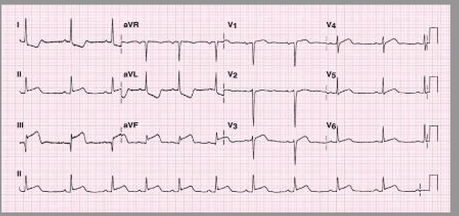
Key Identifiers
ST-segment and T-wave changes in II, III, and aVF
Leads to Key In On
II, III, aVF for the inferior injury pattern
High-yield stem/vignette clues: "Epigastric pain" in a woman is a well-known atypical MI presentation — always keep ischemia on the differential for atypical GI-sounding complaints, especially with a new murmur.
Clinical manifestations & management: Acute inferior wall MI with a new murmur of mitral regurgitation from papillary muscle dysfunction (a mechanical complication of inferior MI). Pearl: always be suspicious of atypical MI presentations in women.
Case 8 — Diltiazem Given for PalpitationsComprehensive CV Cases
30 y/o female with palpitations, given diltiazem in the ED which resolved her symptoms; she was discharged on oral diltiazem. She died days later.
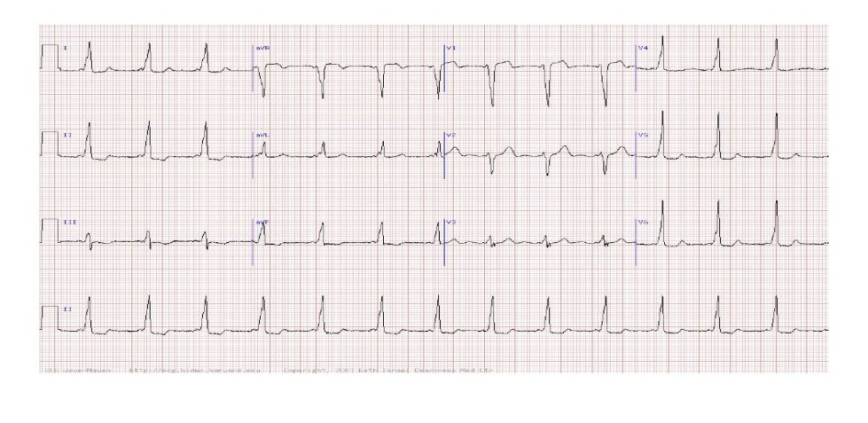
Key Identifiers
Delta wave (pre-excitation) of WPW syndrome; no P waves (atrial fibrillation)
Leads to Key In On
Any lead for the delta wave; absence of organized P waves for concurrent AFib
High-yield stem/vignette clues: This is the single highest-stakes WPW teaching point in the whole deck: WPW + atrial fibrillation treated with an AV nodal blocker (diltiazem, verapamil, beta-blockers, digoxin, or adenosine) can be fatal.
Clinical manifestations & management: AV nodal blockers block the heart's normal (protective, decremental) pathway and favor 1:1 conduction down the accessory pathway, which can degenerate AFib into ventricular fibrillation. Definitive treatment for WPW is catheter ablation of the accessory pathway.
Posterior Wall MIComprehensive CV Cases
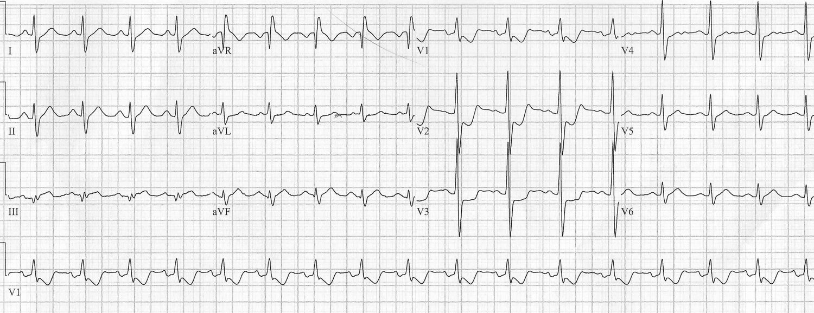
Key Identifiers
Posterior MI classically shows tall R waves and ST depression in the anterior precordial leads (V1–V3) as a mirror-image reciprocal change
Leads to Key In On
V1–V3 for reciprocal ST depression/tall R waves; consider posterior leads V7–V9 to confirm
High-yield stem/vignette clues: Anterior ST depression should always raise the question "could this be a posterior MI?" rather than being called routine anterior ischemia.
Case 9 — Dizziness in a Lifelong SmokerComprehensive CV Cases
50 y/o male with dizziness and a syncopal episode; smokes 2 packs/day for 30 years ("that's his medication").
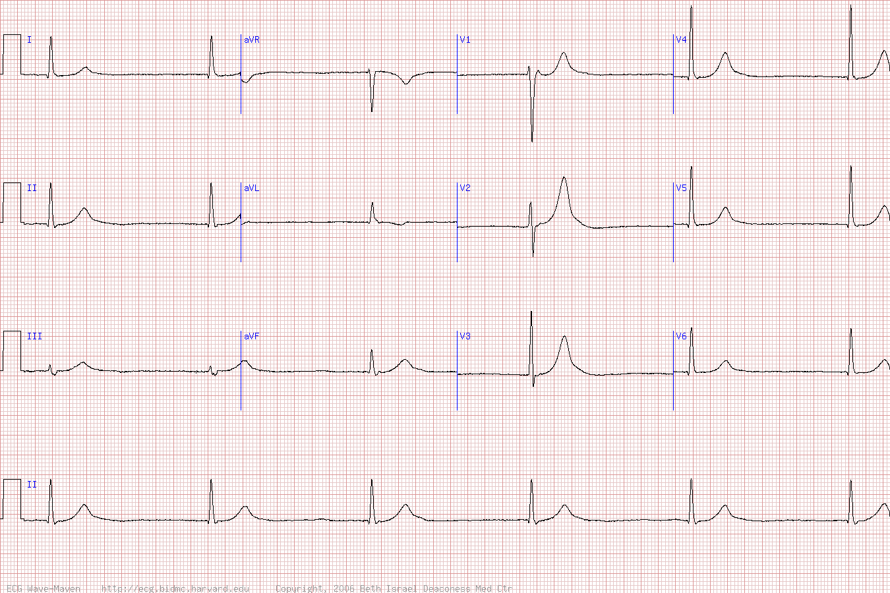
Key Identifiers
Flat baseline, no P waves, bradycardia — pacing from the AV node
Leads to Key In On
Any lead — absence of P waves with a narrow, bradycardic QRS
High-yield stem/vignette clues: Symptomatic bradycardia (dizziness, syncope) from a junctional escape rhythm is a pacemaker indication, not a job for epinephrine, norepinephrine, amiodarone, or cardioversion.
Clinical manifestations & management: Treatment options include amiodarone, sotalol, procainamide, or an AICD depending on the underlying substrate and risk of sudden cardiac death.
Case 11 — The Skipped Beat on a Routine PhysicalComprehensive CV Cases
72 y/o female for a routine physical, on atorvastatin only, normal vitals, with an occasional "skipped beat" heard on exam.
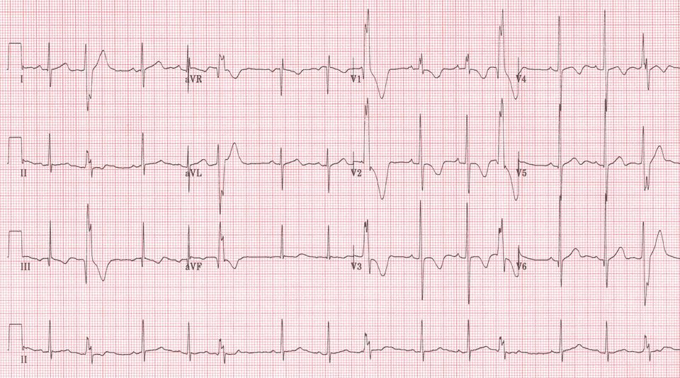
Key Identifiers
A PVC every third heartbeat (ventricular trigeminy)
Leads to Key In On
Rhythm strip pattern: two normal sinus beats, then one PVC, repeating
High-yield stem/vignette clues: An asymptomatic, incidentally found PVC pattern (even trigeminy) in a stable, asymptomatic patient does not automatically require antiarrhythmic therapy.
Clinical manifestations & management: No treatment needed — the patient is stable and asymptomatic. This contrasts with PVCs found in the setting of acute MI or structural heart disease, which carry more concern.
Case 12 — Collapse on the Football FieldComprehensive CV Cases
17 y/o high school football player collapses on the field, found in ventricular tachycardia, defibrillated back to normal sinus rhythm.
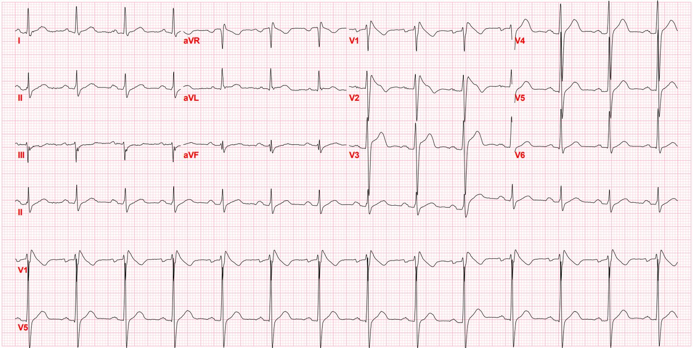
Key Identifiers
ST elevation in V1–V3 with a right-bundle-branch-block-like appearance
Leads to Key In On
V1–V3 for the coved/saddleback ST elevation pattern
High-yield stem/vignette clues: A young, otherwise healthy athlete who collapses in VT with this specific V1–V3 pattern is Brugada syndrome until proven otherwise (not hypokalemia, WPW, Torsades, or hypercalcemia).
Clinical manifestations & management: Brugada syndrome is a genetic (sodium channelopathy) condition causing dangerous arrhythmias. Genetic testing can help identify affected family members. Definitive management often involves ICD placement for those at risk of sudden cardiac death.
Case 13 — Repeated Doses from a Forgetful PatientComprehensive CV Cases
82 y/o female with early dementia, lives alone, repeatedly re-takes her lisinopril because she forgets she already took it. Presents with dizziness. BP 84/50, P 72, R 16.
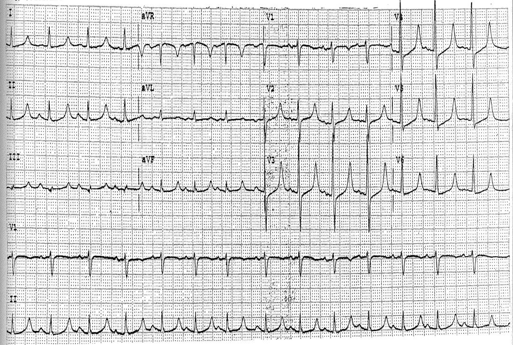
Key Identifiers
Peaked T waves from hyperkalemia (K⁺ = 9.6 in this case) due to excess ACE-inhibitor dosing
Leads to Key In On
Precordial leads for peaked/tented T waves
High-yield stem/vignette clues: Cognitive impairment + inadvertent repeated ACE-inhibitor dosing + hypotension + peaked T waves = severe iatrogenic hyperkalemia.
Clinical manifestations & management: Same hyperkalemia algorithm: stabilize the myocardium (calcium), shift potassium intracellularly (insulin/glucose, beta-2 agonists), remove potassium (binders, dialysis if severe), and address the medication-safety issue at home.
AV Sequential PacingComprehensive CV Cases
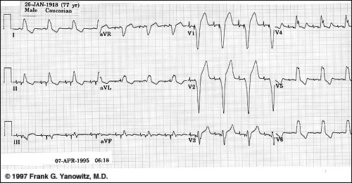
Key Identifiers
Two small pacer spikes per cycle — one atrial spike, one ventricular spike
Leads to Key In On
Any lead — look for the paired spikes immediately preceding the P wave and QRS
Clinical manifestations & management: A ventricular-paced beat mimics an LBBB pattern because the pacing lead sits in the right ventricle, so the right ventricle depolarizes first (just as it does with a native left bundle branch block).
3° AV Block, UnstableComprehensive CV Cases
72 y/o male who collapsed in a store, brought in confused and lethargic by paramedics. BP 70/50.
Key Identifiers
P waves are entirely independent of the QRS complexes (complete AV dissociation)
Leads to Key In On
Compare the P-wave rate to the QRS rate — they march to their own, unrelated beats
High-yield stem/vignette clues: Hemodynamically unstable bradycardia (BP 70/50, confusion) with AV dissociation is complete heart block until proven otherwise.
Clinical manifestations & management: Treatment is pacing (transcutaneous/transvenous as a bridge to permanent pacemaker).
Part 2 · EKG Reference Atlas
One core example per named rhythm/condition, from the didactic CV/Resp II Clinical lecture (Dr. Jois)
Sinus Rhythms
Normal Sinus Rhythm, Sinus Tachycardia & Sinus Bradycardia
Rate
Tachycardia >100 bpm; bradycardia <60 bpm; normal 60–100 bpm
Rhythm
Regular; P wave before every QRS, normal morphology
Identifiers
Upright P in II, inverted in aVR; PR 0.12–0.20s
High-yield stem clues: Any stem describing a regular rhythm with a normal-appearing P wave before every QRS just needs the rate to classify it.
Sinus tachycardia causes: sepsis, hypovolemia, PE, pain, fear, MI, hyperthyroidism, heart failure. Sinus bradycardia is normal in trained athletes and during sleep, but can reflect sick sinus syndrome, hypothyroidism, or drug effect (beta-blockers, digoxin).
Sinus Bradycardia (isolated example)
Rate
<60 bpm (this example: ~43 bpm)
Rhythm
Regular sinus
Identifiers
Normal P-QRS-T morphology, just slow
Disorder of impulse formation from depression of sinus node activity.
Normal Sinus Arrhythmia
Rhythm
Cyclic variation in rate with respiration (speeds up with inspiration, slows with expiration)
Identifiers
P-wave morphology and PR interval stay normal — only the R-R interval varies
High-yield stem clues: A "phasic" irregularity that tracks the respiratory cycle (not truly irregular like AFib) is normal, especially in younger patients.
High-yield stem clues: Sawtooth baseline in lead II or V1 at a suspiciously round ventricular rate (150, 100, 75) suggests flutter with fixed AV conduction (2:1, 3:1, 4:1 block).
Adenosine or calcium channel blockers slow AV conduction and can unmask the sawtooth pattern (adenosine has more diagnostic than therapeutic value here — it usually won't convert flutter).
Atrial Fibrillation
Rate
Variable
Rhythm
Irregularly irregular
Identifiers
No organized/discrete P waves
High-yield stem clues: "Irregularly irregular" is the single word pairing that should trigger AFib before anything else.
Risk factors: hypertension, heart failure, diabetes, advanced age, hyperthyroidism, structural heart disease. Management centers on rate/rhythm control plus thromboembolic risk stratification (anticoagulation).
Multifocal Atrial Tachycardia (MAT)
Rate
>100 bpm
Rhythm
Chaotic/irregular — "wandering atrial pacemaker" at a faster rate
Identifiers
≥3 distinct P-wave morphologies
High-yield stem clues: Elderly patient with COPD or CHF and an irregular tachycardia with multiple P-wave shapes = MAT; consider PE if MAT occurs outside a COPD/CHF context.
Rarely life-threatening. Consider theophylline toxicity as a cause. Treat with oxygen, magnesium, or verapamil; avoid beta-blockers if there's significant COPD.
Premature Atrial Contraction (PAC)
Rhythm
Underlying sinus rhythm interrupted by an early beat
Identifiers
An early P wave with a different morphology than the sinus P wave, sometimes not conducted ("PAC with block")
High-yield stem clues: An otherwise-normal rhythm with one oddly-shaped, early P wave here and there is a benign, extremely common PAC.
Junctional Rhythms
Premature Junctional Contraction (PJC)
Identifiers
An early, narrow QRS with no preceding P wave (or an inverted/retrograde P wave)
Junctional Rhythm (escape)
Rate
40–60 bpm intrinsic junctional escape rate
Rhythm
Regular, narrow QRS
Identifiers
P waves absent, or retrograde/inverted (axis reversed 180° from normal — inverted in II, upright in aVR)
High-yield stem clues: A slow, regular, narrow-complex rhythm with no visible P waves is junctional escape — the AV junction taking over when the sinus node fails or slows excessively.
Accelerated Junctional Rhythm
Rate
60–100 bpm (faster than the intrinsic junctional escape rate, but not "tachycardia")
Identifiers
Same P-wave absence/retrograde pattern as junctional escape, just at a faster rate
SVT, AVNRT, AVRT & WPW
Supraventricular Tachycardia (SVT) — general
Rate
Typically 150–250 bpm
Rhythm
Regular, narrow QRS (absent aberrancy)
Identifiers
P waves often hidden in or immediately after the QRS
Paroxysmal SVT (PSVT)
Rhythm
Abrupt onset of a rapid regular narrow-complex rhythm, then abrupt return to sinus
Identifiers
Sudden start/stop ("paroxysmal") is itself a diagnostic clue
High-yield stem clues: "Starts beating quickly, then stops and resumes normal sinus" is the classic PSVT description. Triggers: WPW, anemia, dehydration/fatigue, excess caffeine, pseudoephedrine, hyperthyroidism.
AVNRT (AV Nodal Reentrant Tachycardia)
Rate
150–250 bpm
Rhythm
Regular, narrow QRS, driven by a reentrant circuit within the AV node
Identifiers
Retrograde P waves in II/III, or a pseudo-R′ in V1 (superimposed retrograde P); P waves often buried in the QRS
High-yield stem clues: Sudden-onset, sudden-offset palpitations with dizziness/SOB in an otherwise normal heart, sometimes triggered by alcohol, coffee, stimulants, or excitement — the most common SVT in adults (~50%).
Onset and termination are abrupt, usually initiated by a premature supraventricular beat.
AVRT (AV Reentrant Tachycardia)
Mechanism
Anatomical reentry using an accessory pathway (Bundle of Kent)
Identifiers
Orthodromic AVRT: anterograde via the AV node → regular narrow-complex rhythm (looks like AVNRT). Antidromic AVRT: anterograde via the accessory pathway → regular wide-complex rhythm that can mimic VT
Rate
Regular, typically rapid
High-yield stem clues: The most common SVT in children (~30%). Often triggered by a premature atrial or ventricular beat. On the surface EKG, orthodromic AVRT is difficult to distinguish from AVNRT — the diagnosis is usually made electrophysiologically.
Retrograde P waves with a long R-P interval support AVRT over AVNRT.
Wolf-Parkinson-White (WPW)
Identifiers
PR interval <120ms; delta wave (slurred, slow initial QRS upstroke); QRS >110ms; discordant ST-T changes; pseudoinfarction pattern in up to 70% of patients
Leads to Key In On
Any lead for the slurred delta-wave upstroke; inferior/anterior leads for pseudo-Q-waves
High-yield stem clues: A congenital accessory pathway (Bundle of Kent) that can degenerate into SVT, AFib, or AFlutter with aberrant/rapid conduction, and can mimic VT on the EKG.
AV-nodal blockers (adenosine, CCBs, beta-blockers, digoxin) are dangerous if WPW coexists with AFib/flutter — they favor 1:1 conduction down the accessory pathway and can precipitate VF. Definitive treatment is catheter ablation.
Ventricular Arrhythmias
Premature Ventricular Contraction (PVC)
Identifiers
Wide, bizarre QRS (≥0.12s) not preceded by a premature P wave; usually followed by a compensatory pause
Isolated PVCs in a normal heart are common and rarely require treatment. A PVC during acute MI is more concerning — it can trigger VT/VF.
3 or more consecutive PVCs at a regular rate; wide QRS
Identifiers
AV dissociation, fusion beats, capture beats when present
High-yield stem clues: A regular, wide-complex tachycardia is VT until proven otherwise — don't assume it can't be VT just because the rate seems "too fast" or "too slow."
Classified as sustained (>30s or symptomatic) vs. nonsustained (<30s, asymptomatic), and monomorphic vs. polymorphic. Sustained VT or VT with hemodynamic instability is an emergency requiring immediate treatment.
VT with Fusion & Capture Beats
Identifiers
Fusion beat (Dressler's beat): a sinus impulse conducts normally at the same time as the ventricular impulse, producing a hybrid QRS morphology. Capture beat: the sinus impulse fully captures the ventricles, producing a completely normal-looking QRS amid the VT
High-yield stem clues: Fusion and capture beats are strong confirmatory evidence of VT (rather than SVT with aberrancy) when present.
Nonsustained VT (NSVT)
Identifiers
A short run (≥3 beats) of VT lasting <30 seconds, self-terminating, asymptomatic
Polymorphic VT
Rhythm
Usually irregular; unstable, with continuously varying QRS morphology
Best treated with IV magnesium. A prolonged QT interval raises the risk of developing polymorphic VT — remove offending QT-prolonging drugs and correct K⁺/Ca²⁺ imbalances.
Torsades de Pointes
Identifiers
A distinctive polymorphic VT where the QRS complexes gradually change amplitude and appear to twist/spiral around the isoelectric baseline
High-yield stem clues: Torsades is associated with a prolonged QT (congenital or acquired) — always distinguish it from garden-variety VT because management differs.
First-line treatment is IV magnesium sulfate, given promptly, even before a confirmed low magnesium level.
Ventricular Fibrillation
Identifiers
Fine or coarse zigzag pattern; no discernible P waves, QRS complexes, or T waves
High-yield stem clues: The most frequently encountered arrhythmia in adults with sudden death.
No organized perfusion, no pulse. Requires immediate CPR and defibrillation — there is no pharmacologic substitute.
Regular, wide QRS (a ventricular escape focus that has accelerated enough to drive the heart)
High-yield stem clues: AIVR appearing after successful reperfusion (spontaneous or via PCI) of an occluded coronary artery is actually a reassuring "reperfusion arrhythmia," not a dangerous one.
Rarely sustained, does not progress to VFib, and rarely needs treatment. Below 50 bpm, drop the word "accelerated" and just call it idioventricular rhythm.
Bradycardia & AV Blocks
Bradyarrhythmias arise from either a disorder of impulse formation (depressed sinus node activity) or a disorder of conduction (a block somewhere in the system — sinus node, AV node/His bundle, or bundle branches).
1° AV Block
Identifiers
PR interval >0.2 sec; every P wave still conducts to a QRS (a "delay," not a true block)
High-yield stem clues: Common in normal hearts, especially during sleep; can also be an early sign of conduction-system disease, myocarditis, or drug toxicity (e.g., AV nodal blockers, Lyme disease).
Does not require treatment by itself (exception: Lyme carditis, which can progress rapidly).
Mobitz I / Wenckebach (2° AV Block)
Identifiers
Progressive PR lengthening with each beat until one P wave is not followed by a QRS (a "dropped beat"); R-R interval shortens as PR lengthens; usually a block within the AV node itself
High-yield stem clues: Usually transient and benign; rarely progresses to complete heart block and rarely needs a pacemaker unless the patient is symptomatic.
Mobitz II (2° AV Block)
Identifiers
Constant PR interval on conducted beats, then a sudden dropped QRS with no warning lengthening; often a block below the AV node in the His-Purkinje system; may have a bundle-branch-block QRS pattern
High-yield stem clues: "Dropped beat with unchanged PR intervals" = Mobitz II — the dangerous one.
More serious than Mobitz I: signifies underlying structural cardiac disease, can suddenly deteriorate into 3° heart block, and requires a pacemaker.
3° (Complete) AV Block
Identifiers
Complete AV dissociation — P waves and QRS complexes fire independently, each at their own intrinsic rate; ventricular rate slower than the atrial/sinus rate
High-yield stem clues: P waves marching straight through, completely unrelated to the QRS complexes, is the single clearest complete-heart-block clue.
Ventricles fall back on an escape rhythm (~30–45 bpm). Leading cause is degenerative conduction-system disease; can also complicate acute MI. Virtually always requires a pacemaker — a true medical emergency.
3° AV Block — Paced Afterward
Identifiers
Regular pacer spikes restoring AV synchrony after complete heart block is diagnosed
Bundle Branch Blocks
Bundle branch blocks are conduction abnormalities, not rhythm disturbances. QRS 0.09–0.11s = incomplete BBB; ≥0.12s = complete BBB.
RBBB vs. LBBB — Side-by-Side Comparison
Identifiers
Compares V1/V6 morphology for RBBB vs. LBBB against a normal QRS
Right Bundle Branch Block (RBBB)
Identifiers
QRS >0.12s; RSR′ ("rabbit ears") in V1–V2 with R′ larger than the initial R; wide reciprocal S waves in I, aVL, V5–V6; T wave opposite the terminal QRS deflection
Leads to Key In On
V1–V2 for rabbit ears; I, aVL, V5–V6 for reciprocal wide S waves
High-yield stem clues: "Rabbit ears" in V1 is the classic RBBB visual, though sometimes you'll only see a tall R wave rather than a true RSR′.
RBBB with Left Axis Deviation (Bifascicular Block)
Identifiers
RBBB pattern plus LAD from a concurrent left anterior fascicular block (LAFB): qR in I/aVL, rS in II/III/aVF
High-yield stem clues: RBBB + a fascicular block = bifascicular block; watch for progression toward complete heart block.
Left Bundle Branch Block (LBBB)
Identifiers
QRS >0.12s; broad/notched ("monophasic") R wave in I, aVL, V5–V6; deep QS or rS in V1; absent septal Q waves in lateral leads; left axis deviation may be present
Leads to Key In On
I, aVL, V5–V6 for the broad/notched R; V1 for the deep negative deflection
LBBB obscures standard ST-elevation criteria for MI — infarction generally cannot be reliably assessed in its presence.
LBBB Morphology Key (V1 vs. V6)
Identifiers
V1: rS or QS pattern. V6: broad, monophasic R wave
New LBBB with Tachycardia
Identifiers
LBBB morphology superimposed on a tachycardic rate
High-yield stem clues: New LBBB with chest pain/tachycardia should be treated as a possible MI equivalent, since standard ST criteria are unreliable.
Pacemakers
Indications: 3° AV block, sick sinus syndrome, AV/bundle-branch block complicating acute MI (often temporary), and recurrent VT (overdrive pacing).
Pacemaker Spike — General
Identifiers
A sharp vertical spike immediately preceding the paced chamber's depolarization
Atrial Pacing
Identifiers
A pacer spike followed by a P wave, then a normal PR interval and normal QRS (this example: atrial pacing with 1° AV block)
Ventricular Pacing
Identifiers
A pacer spike followed by a wide, bizarre QRS resembling a PVC — the lead sits in the RV, so the RV depolarizes first, generating an LBBB-like pattern
AV Sequential (Dual-Chamber) Pacing
Identifiers
Two spikes per cycle — one preceding the P wave, one preceding the wide QRS
Ischemia & Infarction
STEMI — "Tombstone" ST Elevation
Identifiers
ST segment bowed upward ("frown" shape), merging imperceptibly into the T wave — a monophasic current of injury
High-yield stem clues: ST elevation in ≥1mm in most leads (≥2mm in V2–V3 for men ≥40, ≥2.5mm for men <40, ≥1.5mm for women) across ≥2 contiguous leads meets STEMI criteria.
A true emergency — the myocardium is starved of blood supply and needs emergent revascularization.
STEMI Evolution Over Time
Identifiers
Hyperacute T wave → J-point/ST elevation → more pronounced convex ST elevation → ST-T merge into one complex → ST returns to baseline with a new Q wave and loss of R-wave amplitude → T-wave inversion (or eventual normalization)
NSTEMI / Unstable Angina
Identifiers
ST-segment depression and/or T-wave inversion — NOT elevation; new horizontal/downsloping ST depression ≥0.5mm in 2 contiguous leads, and/or T inversion >1mm with a prominent R wave or R/S ratio >1
High-yield stem clues: NSTEMI is actually more common than STEMI, involves less than full-thickness myocardium, and cannot be localized to one coronary territory the way a STEMI can.
Lower initial mortality than STEMI but higher risk of further infarction/mortality over time.
Atrial Enlargement & Ventricular Hypertrophy
Assess atrial enlargement in leads II (parallel to atrial current, most sensitive) and V1 (perpendicular, biphasic — separates right vs. left atrial components).
Right Atrial Enlargement (P Pulmonale)
Identifiers
Increased amplitude of the early (right atrial) portion of the P wave; P-wave duration stays normal; P-wave axis may shift rightward toward/beyond +90°
Causes: tricuspid regurgitation, pulmonary valve stenosis, pulmonary hypertension, cor pulmonale (chronic lung disease) — pressure or volume overload of the right atrium.
Left Atrial Enlargement (P Mitrale)
Identifiers
Terminal (left atrial) portion of the P wave in V1 drops ≥1mm below baseline and is ≥0.04s (1 small box) wide
Causes: mitral stenosis, LV dysfunction, mitral regurgitation, VSD — pressure or volume overload of the left atrium.
Right Ventricular Hypertrophy (RVH)
Identifiers
Right axis deviation; narrow QRS; tall R in V1 (R>S, >7mm or R/S>1); dominant S in V6 (>7mm or R/S<1); RV strain (T inversion/ST depression in V1–V3, II, III, aVF); RBBB or incomplete RBBB may coexist
Most common causes: pulmonary disease and congenital heart disease.
Left Ventricular Hypertrophy (LVH)
Identifiers
Sokolow-Lyon voltage criteria: S in V1 + R in V5 or V6 >35mm; supportive non-voltage criteria: increased R-wave peak time >50ms in V5/V6, ST depression + T inversion in left-sided leads (LV strain)
High-yield stem clues: Voltage criteria alone are not diagnostic — you need supportive non-voltage (strain) criteria to call true LVH rather than just "voltage criteria for LVH."
A major noninvasive marker of increased cardiovascular morbidity/mortality risk, including sudden cardiac death.
Metabolic & Other Manifestations
Hypothermia — Osborn (J) Wave
Identifiers
An abrupt extra deflection right at the J point (Osborn/J wave); sinus bradycardia; prolonged PR, QRS, and QT
High-yield stem clues: ~80% of patients show an Osborn wave as core temperature approaches 86°F. Can be mistaken for acute coronary syndrome given the dramatic ST elevation.
Treatment: warm the patient. Watch for muscle-tremor (shivering) artifact, which can mimic AFib/flutter.
Hyperkalemia — Progressive Changes
Identifiers
Mild-moderate: peaked/"tented" T waves. Moderate-severe: P-wave flattening, PR prolongation, QRS widening. Very severe: sine-wave pattern preceding asystole
High-yield stem clues: Recognize the progressive pattern, not just one isolated finding — hyperkalemia can evolve rapidly into lethal conduction and ventricular rhythms.
Hypokalemia
Identifiers
ST-segment depression; flattened T wave with a prolonged-appearing QT; prominent U wave
The EKG can be a better marker of serious toxicity than the serum K⁺ level itself. Also potentiates digoxin toxicity.
Prolonged QT / Torsades Risk
Identifiers
QT interval prolonged relative to the heart rate (QTc); risk of degeneration into polymorphic VT/Torsades
High-yield stem clues: Long QT can be congenital (ion channel mutations) or acquired (drugs — antiarrhythmics like sotalol/amiodarone/dofetilide/procainamide/quinidine are the most common culprits; also psychotropics like haloperidol; electrolyte disturbances: hypoK, hypoMg, hypoCa).
Digitalis Effect
Identifiers
Gradual, gently downsloping ("scooped") ST-segment depression merging almost imperceptibly from the preceding R wave, with flattened/inverted T waves
High-yield stem clues: The gradual scooped downslope helps distinguish the digitalis effect from the more symmetric ST depression of ischemia — though this can be harder to separate from LVH-with-strain, especially since digoxin is sometimes used in HFrEF patients who also have LVH.
The digitalis "effect" (a therapeutic-level EKG signature) is not the same as digitalis toxicity — toxicity requires correlating level, potassium, symptoms, and rhythm (can include junctional rhythms, PVCs, AV block).
Low QRS Voltage & Electrical Alternans
Identifiers
Low QRS voltage + tachycardia + electrical alternans (consecutive, normally-conducted QRS complexes alternating in height) — the classic triad of massive pericardial effusion
High-yield stem clues: Electrical alternans occurs because the heart swings back and forth within a large fluid-filled pericardial sac.